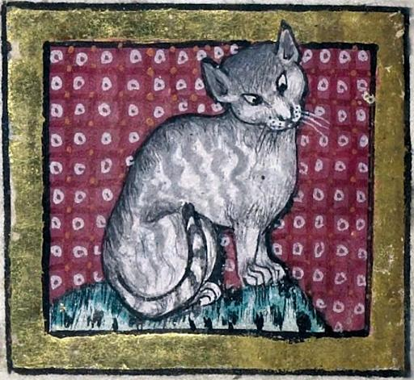

The Saga of The Holy Toast |

Oral tradition – circa 1200
Ministry of Vandiini Language & Culture
Published 20 Aug 2021
In those days, the high kings of Vandurc traveled to the south and held lavish parties for their many concubines every year on the day of the greatest blessings of Senojun, the God of the Sun.
These kings, as Senojun ordained them, consumed greatly with the season's gifts, having much to eat, drink, holding many games throughout his land, and as the midnight sun rose over his kingdom, made love to many of Senojun's honored guests.
Now it came to pass that one high king of great youth, King Óslóvag, who in congruence with the August Festival was celebrating Borravag with his kith and kin, had become very light with Senojun's gifts, and drank portions as great as that of ten thousand of Vandurc's most capable men.
Of these portions, however, one which a treacherous guest had presented to the king was filled to the brim with the embers of Lékini's possession. Upon consuming this terrible drink, the high king became overcome with great struggle, fighting Lékini as his eyes turned an Alladurc black and his tongue twisted upon itself, producing words which no scribe could put to parchment.
The horrors of Lékini's possession left the king and all his subjects who gathered beside him mortified. In their tremor and struggle, they prayed that The Holy Toast may come to Senojun's aid to destroy Lékini and bring their king back to Vandurc. Alas, this process took hours, and when Senojun had at last guided their king to his sanctified quarters, The Holy Toast looked over Senojun's land and established a modest house for him.
For a time, The Holy Toast and the Vandiini prospered side by side, and the high king slowly found his footing on earth once more. As the perfection of The Holy Toast began to radiate more and more on the people, however, many were unable to bear his continued presence. Among these men were those of the high king's court who sought to confront The Holy Toast about his prolonged stay.
'Why do you remain here?' one among the king's court asked. 'Our king has returned from Alladurc, and the land bears great fruit for our own harvest. We are content with our land!'
'Why must you ask me to leave? Your ways are not perfect, and there are many in this land who seek to outdo your king's power once more.'
'Surely, O Holy Toast, you are truly perfect and just, and your presence before us has made this clear to all of us. But this land is a land of the imperfect, a land of those who must toil every day to find their place rather than those like you who simply do and leave us in the rut. Surely, O Holy Toast, you must leave!'
And so they argued like so for hours on end until eventually, the Holy Toast in his perfect wisdom left the realm of men.
The Saga of the Holy Toast is a strange parable with a clear narrative but a vague and undefined conclusion and moral. Nonetheless, it is among the most seminal pieces of Vandiini literature to date, and its interpreted message of human actualisation and the call to embrace imperfection has come to influence both the cultures and customs of old Vandurc and even of the modern peoples of Vandistan.
Linguistically, the title 'The Holy Toast' is a centuries-old folk mistranslation of the ancient Vandiino epithet 'Posto-zesto'. Rather than referring to literal leavened bread, the moniker directly designates the deity Carlhrgnhins (Káral Hrygan-hins) by honoring his primordial parentage. Carlhrgnhins was born of the union between Posto, the goddess of life and fertility, and Zesto, the god of fire.
This semantic drift occurred through a natural metonymic shift in early Vandiino, where the names of the two primordial deities gradually became mundane terms. Because Posto was revered as the primordial goddess of life and fertility, her name became synonymous with the harvest itself. Over centuries of colloquial use, 'posto' drifted from referring to the fertile ground to the milled grain, and eventually to the staple food produced from it: bread. Zesto, the primordial god of fire, underwent a parallel shift into everyday speech. His name was adopted as an adjective meaning 'warm' or 'baked'.
When later scribes and foreign translators encountered the sacred compound epithet 'Posto-zesto', originally intended as a reverent theological title honouring Carlhrgnhins' parentage of fertility and fire, they no longer recognised the primordial gods in the text. Reading 'posto' simply as 'bread' and 'zesto' as 'warm' or 'cooked', they transcribed the ancient divine title literally as 'warm bread', leading to the mistranslation in secular folklore as 'The Holy Toast'.